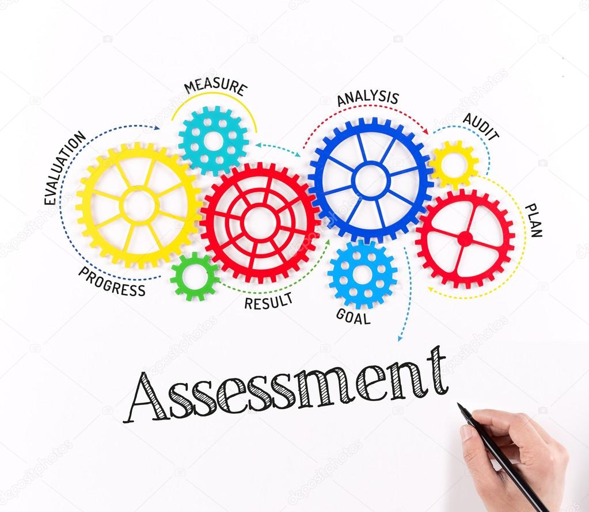

ICT and Assessment in Learning
An essential component of education is assessment, which involves gauging the knowledge and development of students. It helps customize lessons to match each student's unique learning demands and offers relevant information about how well teaching strategies work.
The role of ICT in the process of assessment is to make it easier for educators. Information and Communication Technology refers to the use of digital tools and technologies to facilitate the creation, storage, retrieval, and exchange of information. In the context of assessment, ICT can include various digital tools, software, and platforms designed to streamline the evaluation of students' knowledge and skills.
Types of Assesment
Assessment in education is diverse, encompassing various methods to gauge learning and progress. These methods serve specific purposes and occur at different stages of the learning process.
- Formative Assessment
- This occurs throughout the learning process, providing ongoing feedback to both students and instructors. It aims to identify areas needing improvement and guide instructional strategies.
Examples include quizzes, observations, and self-assessment.
- Summative Assessment
- Conducted at the end of a unit or course, it evaluates a student's overall learning and typically assigns grades or determines advancement. Tests, projects, and portfolios fall under this category.
- Diagnostic Assessment
- Implemented at the beginning of a course, it assesses students' strengths, weaknesses, and prior knowledge. It is intended to identify learning difficulties during instruction. It can detect commonly held misconceptions about a subject. It is used to detect causes of persistent learning difficulties despite the pedagogical remedies applied by the teacher. This aids instructors in tailoring instruction to meet individual needs.
- Performance Assessment
- Focuses on evaluating students' abilities to apply knowledge and skills in real-world situations. Projects, presentations, and portfolios are commonly used.
- Authentic Assessment
- Reflects students' learning, achievements, motivation, and attitudes through relevant classroom activities.
- Placement Assessment
- Determines the appropriate level or course for students based on their skills and knowledge, ensuring they are placed in suitable educational settings.
Assessment in education is a multifaceted process catering to various stages of learning. From the ongoing feedback of formative assessment to the comprehensive evaluation of summative assessment, each type serves distinct purposes, aiding both students and instructors in enhancing the learning experience. Diagnostic, performance, authentic, and placement assessments further enrich this landscape, ensuring a holistic approach to understanding and supporting students' educational journeys.
Role of ICT in Assessment of Learning

The use of Information and Communication Technology (ICT) in education has revolutionized the way students learn and teachers teach. ICT can be used in various stages of assessment, such as test administration, scoring, analysis, and feedback. For instance, ICT can help teachers store and record information about how students are developing their understanding of new material. It can also take over some of the roles of assessing and providing feedback to students, allowing teachers to focus on other aspects of supporting learning. ICT can also be integrated into completing student tasks such as portfolio and project-based assessment.
- Enhanced Question Types – Technology-based assessments allow for a variety of question types beyond the limited multiple-choice, true-or-false, or fill-in-the-blank options that have characterized traditional assessments.
- Examples of enhanced question types include the following
- The graphic response, which includes any item to which students respond by drawing, moving, arranging, or selecting graphic regions.
- Hot text, in which students select or rearrange sentences or phrases within a passage.
- Performance-based assessments, in which students perform a series of complex tasks. Technology-enhanced questions allow students to demonstrate more complex thinking and share their understanding of the material in a way that was previously difficult to assess using traditional means.
- Equation response, in which students respond by entering an equation.
- Provide Real-Time Feedback – Technology-based formative assessments can offer real-time reporting of results, allowing stakeholders to understand students' strengths and weaknesses, while guiding them to make valid, actionable interpretations of the assessment data. Such assessments can enable educators to see, evaluate, and respond to students' work more quickly than can traditional assessments. Similarly, learners and their families can access this information almost in real-time. Technology based summative assessments also facilitate the faster turnaround of results.
- Increase Accessibility – Advances in technology grounded in Universal Design and systems that align to Universal Design for Learning (UDL) have made assessments more accessible and valid for a greater number of students, including those with diverse abilities and language capabilities. These advances have allowed a greater proportion of the population access to assessments. Special features include the ability to increase font sizes and change color contrast, text-to-speech, bilingual dictionaries, glossaries, and more. Similarly, assistive technology, such as text-to speech, alternate response systems, and refreshable braille, supports students with disabilities in accessing learning.
- Adapt to Learner Ability and Knowledge – Computer adaptive testing has facilitated the ability of assessments to estimate accurately what students know and can do across the curriculum in a shorter testing session than would otherwise be necessary. Computer adaptive testing uses algorithms to adjust the difficulty of questions throughout an assessment on the basis of a student's responses. For example, if the student answers a question correctly, a slightly more challenging item is presented next; if the student answers incorrectly, he or she receives another opportunity to demonstrate knowledge in a different manner.
- Embedded With the Learning Process – Embedded assessments are woven directly into the fabric of learning activities students undertake. Such assessments may be technology-driven or simply a part of effective instruction, and they may appear in digital learning tools and games. They are generally invisible to the instructional process because they are embedded in regular classroom activities. Embedded assessments have the potential to be useful for diagnostic and support purposes in that they provide insights into why students are having difficulties in mastering concepts and provide insights into how to personalize feedback to address these challenges.
- Assessment for On-going Learning – Technology provides students with multiple pathways to create accessible work throughout the year. To demonstrate their understanding, students can create multimedia productions, construct websites to organize and analyze information, and design interactive presentations to serve as products for assessment. These pathways allow teachers to understand how students access and understand information across given categories.
- Computer as Scoring Tool – One of the advantages of using a web-based exam software or an online examination system is that it gives a high level of transparency as opposed to the traditional method or remote method. It is almost impossible to compromise exam questions and evaluations because they cannot also be influenced. Most online exams generate their results instantly and it is often possible for the exam taker to get information on his results immediately. Some of the major advantages of online examination are:
(1) accessibility and flexibility; (2) time management; (3) save cost; and (4) statistical analysis.
It emphasizes the importance of schools strengthening their commitment to developing better assessment practices supported by ICT. It suggests that ICT can be used to create online assessments, provide real-time feedback, offer adaptive testing, increase accessibility for diverse students, provide assessment analytics for performance analysis, and support students in completing tasks that require higher-order thinking skills.
In summary, ICT can play a significant role in assessment by providing teachers with tools to monitor student learning and provide feedback to both teachers and students.
Current Trends in Assessment of Learning - Using E-Portfolio
E-portfolios have emerged as a pivotal tool in modern education, enabling students to curate, reflect upon, and exhibit their educational accomplishments and goals. They serve as platforms for students to gather and present their learning objectives while receiving valuable feedback and improvement suggestions. The utilization of e-portfolios aligns with contemporary educational paradigms, challenging traditional methods and fostering a shift towards learner-centered approaches, authentic assessments, and personalized learning experiences.
The current trends in the assessment of learning through e-portfolios encompass various dimensions. Authentic assessment is facilitated as students showcase their knowledge and skills in real-world settings. Moreover, e-portfolios encourage self-assessment and reflection, empowering students to evaluate their own learning journeys. These portfolios also support the integration of diverse media formats, allowing students to present their work in versatile ways, fostering creativity and expression.
Collaboration and feedback are fostered through e-portfolios, facilitating interaction between students, teachers, and peers. Additionally, these portfolios facilitate longitudinal assessment, capturing evidence of learning progression over time. Leveraging technology, e-portfolios streamline the assessment process, making it more efficient and accessible. Furthermore, students can personalize their portfolios, reflecting their unique interests and learning objectives.
Research indicates that e-portfolios play a crucial role in lifelong learning by comprehensively evaluating learning and personal development. Observations in the educational sector suggest an increasing adoption of e-portfolios, with campuses employing more sophisticated approaches and the emergence of new businesses dedicated to this field. E-portfolios promote student agency, supporting 21st-century learning by enabling students to maintain and reflect on their portfolios throughout their educational journeys, promoting continuous examination, evaluation, and reflection on their work.
In conclusion, the utilization of e-portfolios represents a significant evolution in educational assessment practices, aligning with contemporary educational philosophies and fostering a dynamic, personalized, and comprehensive approach to evaluating student learning and development.